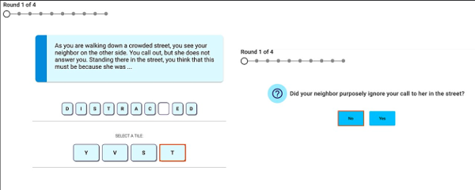
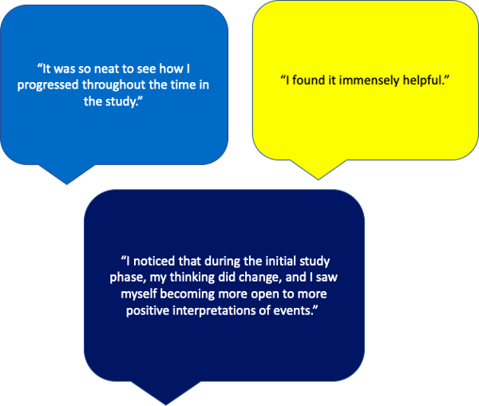
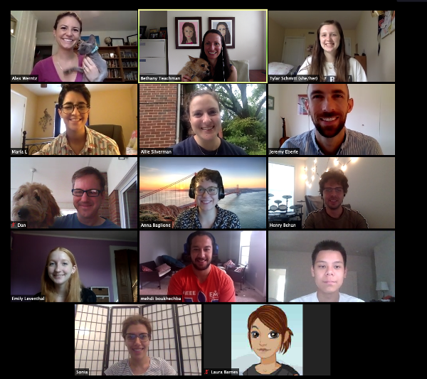

|
Welcome to Mindtrails!Thank you for participating in our study. We hope the program has helped you learn how to better manage anxiety in your everyday life. This newsletter will get you familiar with the process for completing the surveys we'll send you about two and six months from now. If you have more questions after reading, contact us at studyteam@mindtrails.org. What is your role in MindTrails?You play an essential role in the MindTrails study. Your participation and your responses to the follow-up surveys will help us to make MindTrails even better for future participants. Ultimately, our goal is to create an accessible and cost-effective program that reduces symptoms of anxiety, and your participation is very important to us achieving that goal. The MindTrails study consists of five training sessions. Each session lasts about 15-20 minutes, and you'll complete one per week for five weeks. While you can leave the study at any time, we encourage you to complete the study in full so that you can get the most out of the program. Two months after you complete the study, you will be asked to complete a survey. The purpose of the survey is to understand the long-term effects of the MindTrails program, and how people are managing their anxiety during this particularly challenging time with the coronavirus. How does Mindtrails work?MindTrails uses cognitive bias modification (CBM) to help you develop more flexible thinking skills. The picture below shows an example of one of the CBM scenarios in the MindTrails program. The way that we think is influenced by cognitive biases, which are patterns of thinking that relate to our emotional responses. Cognitive biases can determine whether we interpret a situation in a positive or negative way. Here's an example of cognitive biases in action: Imagine that you're in line at a coffee shop. You see your neighbor off to the side, waiting for their coffee. You wave to your neighbor but they keep their head down, not waving back. Your mind instantly starts racing and you can't help but think that they're avoiding you. Much like the cognitive bias in this example, people with anxiety often assume a negative outcome, even though there is no evidence to suggest that to happen. Through repeated practice, CBM targets your cognitive biases to teach you how to interpret information in more flexible, and less rigidly negative ways. As you start the MindTrails study, you may wonder why it’s set up the way it is. These videos, presented by members from our team, will give you some insight into the design of MindTrails and provide useful tips on how to get the most out of the program. "Why MindTrails Doesn't Have All Stories End Positively" by graduate student Jeremy Eberle "Why It's Important to Really Imagine Yourself in the MindTrails Stories and How to Do That" by graduate student María Larrazabal "Why MindTrails Involves Repetition" by graduate student Alexandra Silverman "How the MindTrails Training Can Shift Your Experiences in the Real World" by project coordinator Henry Behan Is MindTrails effective?The purpose of the study is to research the effectiveness of the MindTrails program at shifting anxious thinking and reducing anxiety. While we can't guarantee that it will reduce your anxiety symptoms, research suggests that CBM programs like MindTrails can be effective at changing interpretations for people with clinical levels of anxiety. Learn about the science behind MindTrails and hear from past participants: Meet the MindTrails TeamThe MindTrails Team is a collaborative team of clinical psychologists, engineers, computer scientists, undergraduate, and graduate students at the University of Virginia. Our team is committed to developing and improving online anxiety-based interventions for the next generation. We're excited to learn whether MindTrails can address the need for more accessible, evidence-based care, and we hope the program works for you! Thanks for Reading!Thank you for reading this newsletter. If you have any questions, contact us at studyteam@mindtrails.org. Best, The MindTrails Project Team To make sure you receive our emails, please add our email address () to your list of contacts. By adding us to your contacts, you ensure all our emails don't end up in your spam folder. Please note that email is not a secure form of communication and should not be used to discuss any confidential matters, including personal health information, given that its confidentiality cannot be assured. You received this email because you signed up to participate in the MindTrails study. You can manage your contact preferences, or exit the study at any time by visiting your Account Settings. |